Capstone Senior Project · Industry Sponsor · Aug 2024 – May 2025
A physics-based modal testing campaign to identify resonance frequencies in a forklift overhead guard and validate structural modifications designed to shift those frequencies away from engine excitation ranges.
Overview
Forklift operators are exposed to sustained vibration and noise generated by the engine and hydraulic systems. When the engine's operating frequencies align with the natural frequencies of the overhead guard, resonance amplifies the noise and vibration reaching the operator — a long-term occupational health concern.
Hyster-Yale tasked our team — Modal Minds — with modifying the overhead guard structure to shift its resonance frequencies away from the engine's key excitation frequencies: 26.66 Hz, 66.66 Hz, and 80 Hz (corresponding to idle, operating, and full throttle RPM).
| Engine Condition | RPM | 2nd Order Frequency | Target Shift Range |
|---|---|---|---|
| Idle | 800 | 26.66 Hz | 32 – 53 Hz |
| Operating | 2000 | 66.66 Hz | 72 – 73 Hz |
| Full Throttle | 2400 | 80 Hz | 88 – 96 Hz |
Contribution
The team split into two parallel groups. I worked on the data acquisition and physical testing sub-team alongside Cruz Flores, doing the majority of the hardware and software work for that side of the project. While Ryder Fleming and Koji Becker drove the FEA simulation and SolidWorks redesign effort, my group was responsible for building the system that would physically validate — or invalidate — their simulation results.
My core responsibilities included designing the hardware and software stack for the data acquisition system, writing the accelerometer interface code in C++, designing and executing the 38-node test procedure, and processing the raw sensor data into MATLAB frequency plots and histograms.
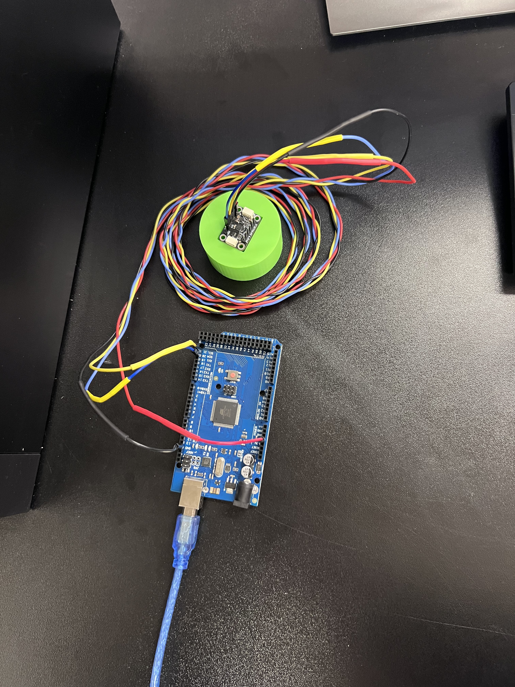
The data acquisition hardware — ICM-20649 accelerometer on a custom 3D-printed mount, wired to the Arduino used for register-level sensor configuration.
Methodology
We designed a custom data acquisition system built around ICM-20649 tri-axial accelerometers interfaced with Arduino microcontrollers over SPI. I interpreted the accelerometer datasheets and configured the 8-bit control registers in C++ to set the measurement range, sample rate, and output format appropriate for our frequency range of interest (0–120 Hz).
Process Deep-Dive
Each strike generated a burst of raw accelerometer readings that, on their own, said nothing about resonance. Turning 380 individual data sets (5 runs × 2 strike directions × 38 nodes) into a clear picture of the structure's natural frequencies took a five-stage pipeline, run in MATLAB for both the initial and final overhead guard.
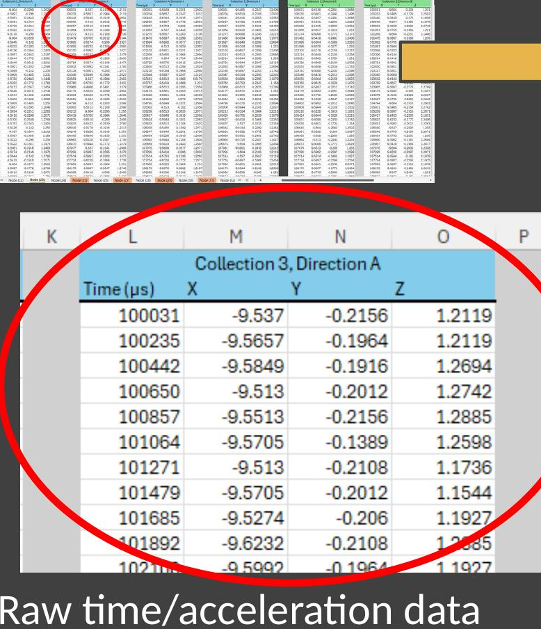
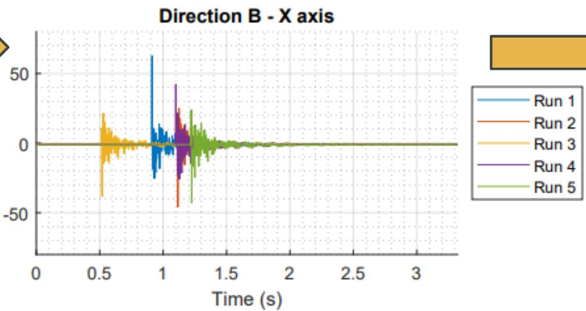
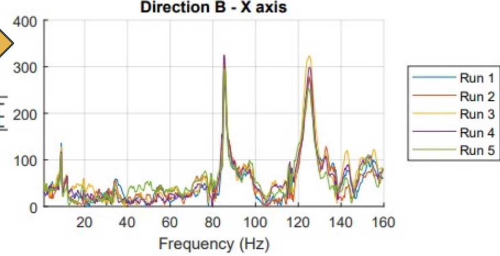
No single strike or node told the full story — accelerometer noise and inconsistent strikes made individual readings unreliable. But aggregating peaks across all 38 nodes into one histogram (the charts in the Results section above) let the true resonance frequencies emerge from the noise.
Results
The histograms below show the distribution of peak frequencies identified across all 38 nodes — aggregated across all directions and axes — for both the initial (unmodified) and final (modified) overhead guard. The dashed red lines mark the engine excitation frequencies the team aimed to avoid.
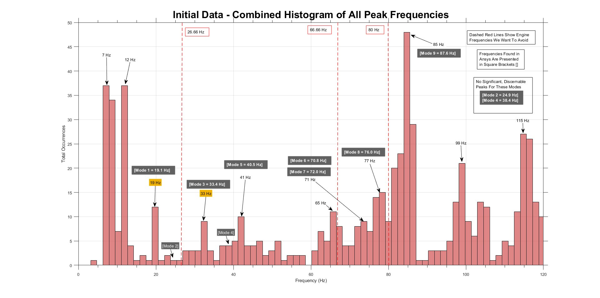
Fig. 1 — Initial OHG: Combined histogram of peak frequencies across all 38 nodes. Dominant peaks cluster near engine frequencies (26.66 Hz, 66.66 Hz, 80 Hz).
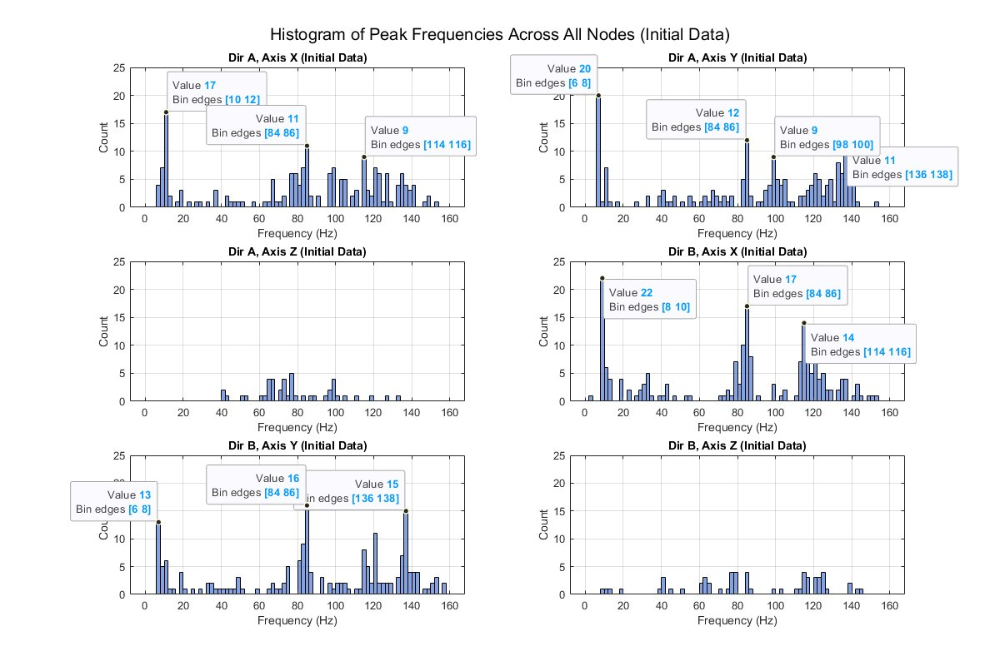
Fig. 2 — Initial data broken down by test direction (A/B) and axis (X, Y, Z), showing how frequency response varied across measurement orientations.
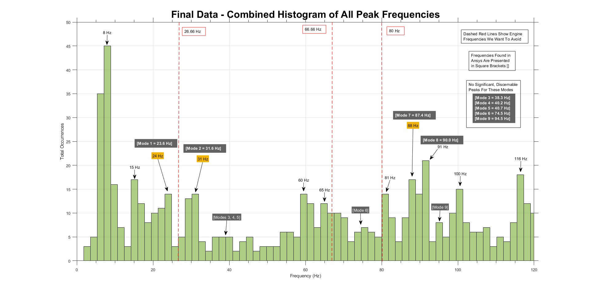
Fig. 3 — Final OHG (post-modification): Peak frequencies visibly shifted. Mode 1 moved from ~19 Hz to ~24 Hz; Mode 7 shifted to 88 Hz — landing within the target range of 88–96 Hz.
Physical testing confirmed that the structural modifications successfully shifted several resonance modes away from the engine excitation frequencies. Mode 7 shifted from 72 Hz to 88 Hz, placing it within our target range. The results aligned closely with Ansys FEA predictions, validating both the simulation methodology and the testing approach. These findings were presented to Hyster-Yale Materials Handling and at the University of Idaho Engineering EXPO.
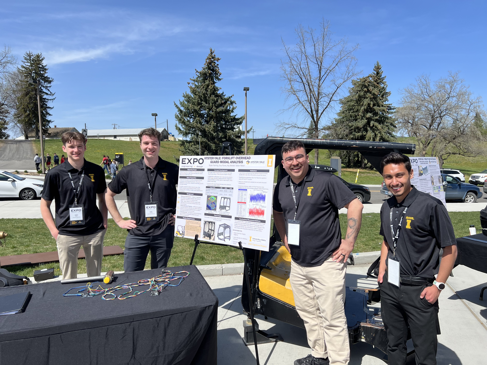
Modal Minds at the University of Idaho Engineering EXPO — presenting the modified overhead guard, test rig, and final results to judges and sponsors.
Reflection
This project was my first exposure to building a full instrumentation and data acquisition system from scratch. Programming the accelerometers at the register level — reading datasheets, understanding bit-field configurations, and debugging SPI communication — gave me a practical foundation in embedded sensor integration that no coursework had directly covered.
Running a structured 38-node test on a physical structure also taught me how much test procedure design matters. Small inconsistencies in sensor orientation or mounting could shift a frequency peak by several Hz — which at this scale of problem is meaningful. I learned to design for repeatability, not just accuracy.
Working in parallel with the simulation team reinforced how simulation and physical testing are most powerful when used together — not as substitutes for each other. When our histograms matched the Ansys output, confidence in both increased. When they diverged, it gave us something specific to investigate.
Behind the Project
A closer look at the hardware, testing setup, and team behind the project.
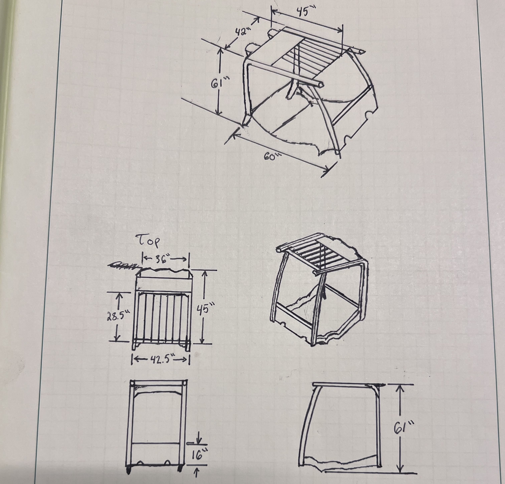
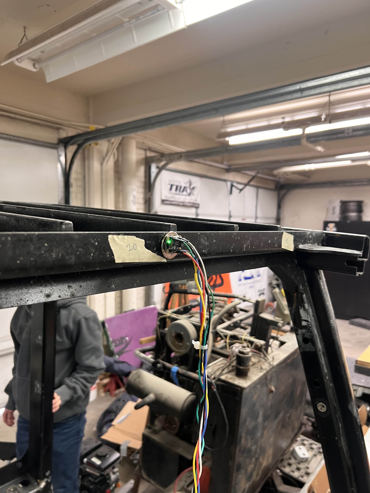
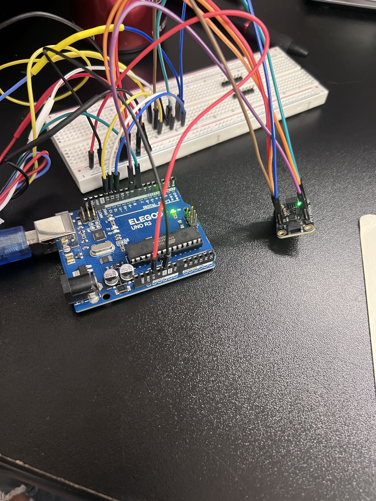
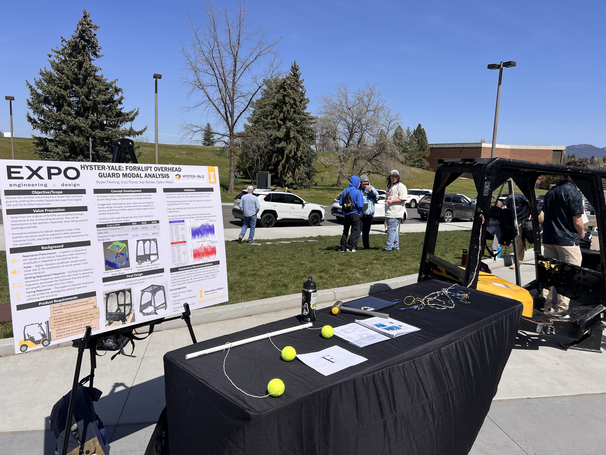
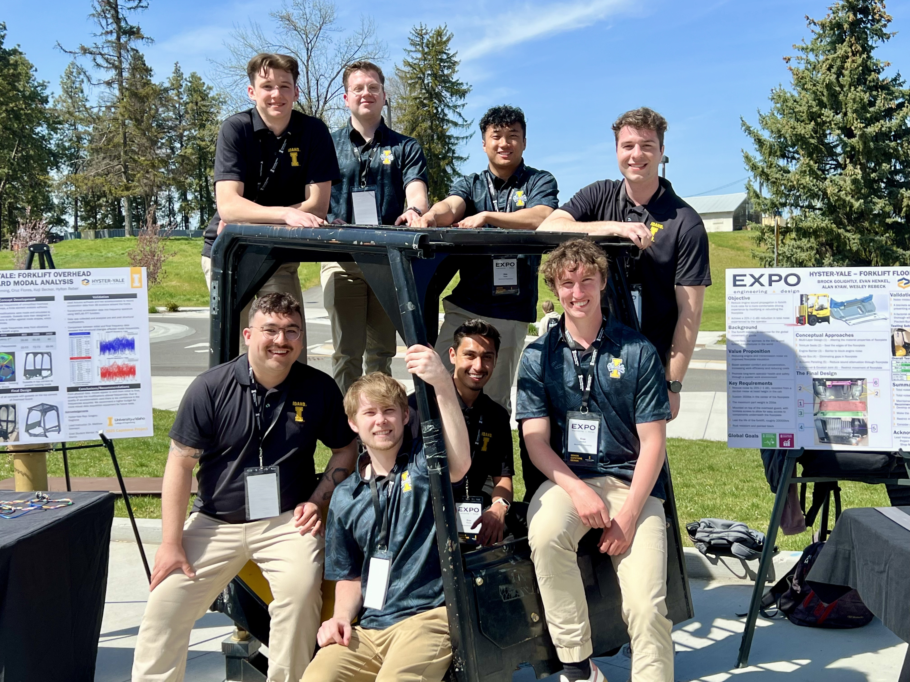